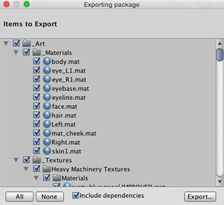

Exporting Packages
As you build your game, Unity stores a lot of metadata about your assets, such as import settings and links to other assets, among other information. If you want to transfer your assets into a different project and preserve all this information, you can export your assets as a Custom Package.
See Packages for detailed information on using Asset packages, including importing and exporting.
Exporting New Packages
Use Export Package to create your own Custom Package.
- Open the project you want to export assets from.
- Choose Assets > Export Package… from the menu to bring up the Exporting Package dialog box. (See Fig 1: Exporting Package dialog box.)
- In the dialog box, select the assets you want to include in the package by clicking on the boxes so they are checked.
- Leave the include dependencies box checked to auto-select any assets used by the ones you have selected.
- Click on Export to bring up File Explorer (Windows) or Finder (Mac) and choose where you want to store your package file. Name and save the package anywhere you like.
HINT: When exporting a package Unity can export all dependencies as well. So, for example, if you select a Scene and export a package with all dependencies, then all models, textures and other assets that appear in the scene will be exported as well. This can be a quick way of exporting a bunch of assets without manually locating them all.

Exporting Updated Packages
Sometimes you may want to change the contents of a package and create a newer, updated version of your asset package. To do this:
Select the asset files you want in your package (select both the unchanged ones and the new ones).
Export the files as described above in Export Package, above.
NOTE: You can re-name an updated package and Unity will recognise it as an update, so you can use incremental naming, for example: MyAssetPackageVer1, MyAssetPackageVer2.
HINT: It is not good practise to remove files from packages and then replace them with the same name: Unity will recognise them as different and possibly conflicting files and so display a warning symbol when they are imported. If you have removed a file and then decide to replace it, it is better to give it a different, but related name to the original.